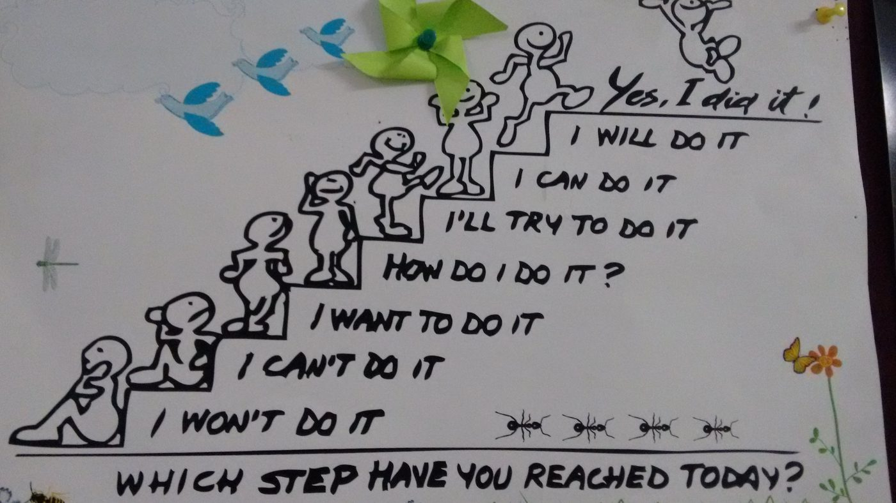

Everyone deserves the chance to reach their full potential.
That conviction has carried me across education, disability inclusion, workforce development, economic mobility and social entrepreneurship, in India and the US. The sectors have changed. The belief hasn't.

Opportunity is a matter of justice.
Talent is everywhere. Access isn't. Too many people never get the tools, pathways or support to use what they're capable of. Closing that gap is the work I've chosen.
People, not just numbers.
Every metric in my programs stands for a person, a family and a community. I measure rigorously because the people behind the numbers deserve programs that actually work.
Excellence in everything.
At the end of every program I run, I ask myself one question: did I chase excellence here? Holding that standard brings discipline, curiosity, creativity and consistency to every task, large or small.
And if I'm honest, this work is personal. I rest easier knowing it made a real difference in someone's life.